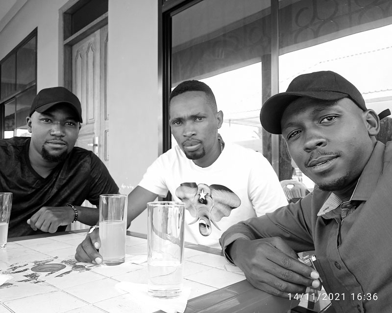
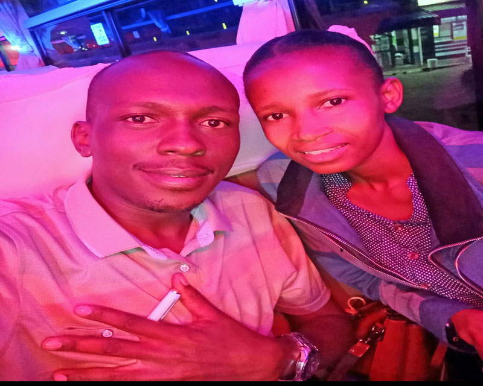
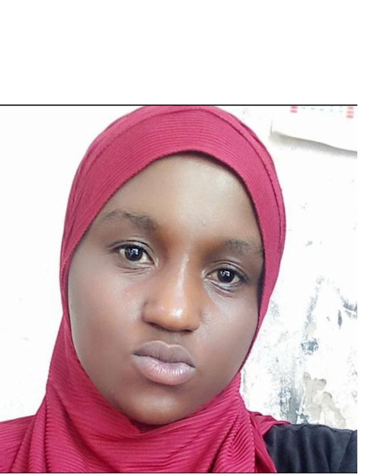

Tabia za wanadamu: Jinsi gani tabia inabadilika kuwa sifa ya mtu?.
Usawa.
wanadamu wote tunatokana na mfumo mmoja, tunaanza kwa kutungwa mimba, kisha kupita katika mabadiliko kadhaa na baada ya kukamilika muda wa kukaa ndani ya tumbo la mwanamke, ndipo tunazaliwa katika hali ya uchanga.
Hatua hii ya awali ya kutungwa mimba hadi kuzaliwa ni hatua tunayoipitia watu wote kwa usawa, kwa sababu hiyo ndiyo maana tunasikia kauli, “Binadamu wote ni sawa.” Usawa wetu unaanzia katika mchakato wa kutungwa mimba na kuishia kuzaliwa, baada ya hapo kila mmoja wetu anaanza kutengeneza “Upekee” au “Uniqueness.”
Upekee huo mara nyingi unachagizwa na mambo kadhaa
- Tabia ya wazazi
- Tabia ya jamii inayomzunguka
- Hali ya mazingira anayoingiliana nayo
- Taaluma
- Imani nk.
Mambo hayo ni baadhi ya yale yanayochangia kwa kiasi kikubwa jamii kuwa na watu wenye tabia tofauti tofauti kwa upekee wao. Kwa sababu hiyo inatufanya tuwe tunategemeana kutokana na tofauti zetu.
Uumbaji wa Mungu.
Kufuatia utofauti wa tabia zetu zinazotengenezwa na baadhi ya mambo niliyoyaorodhesha hapo juu, binadamu tunagawanyika katika nadharia ya Uuumbaji. Naiita nadharia kwa sababu haiwezi kutafsiriwa kwa matendo ya kibinadamu. Katika mgawanyiko huo miongoni mwa watu, kunasababisha kuzaliwa “Imani” mbalimbali Ulimwenguni.
Imani hizi zinatokana na Urithi wa mapokeo kutoka kwa wahenga, uzoefu wa maisha mtu anaoupata kupitia changamoto mbalimbali, maingiliano ya jamii mbalimbali, Taaluma zenye msingi wa Sayansi. Haya yote kwa pamoja yanachangia kuleta mgawanyiko wa kimtizamo miongoni mwa watu, haswa linapokuja suala la Uumbaji wa mwanadamu na Dunia.
Zifuatazo ni baadhi ya Imani na tofauti zake za kimtizamo juu ya Uweza wa kimungu.
- ATHEISM — NO GOD
- AGNOSTICISM — DO NOT KNOW
- ANIMISM — SPIRITS ARE gods
- POLYTHEISM — Many gods
- DUALISM — two gods (good and bad)
- MONOTHEISM — ONE GOD
- DEISM — CREATOR CAN NOT CONTROL
- THEISM — CREATOR CAN CONTROL
- EXISTENTIALISM — EXPERIENCE IS GOD
- HUMANISM — MAN IS GOD
- RATIONALISM — REASON IS GOD
- MATERIALISM — ONLY MATTER IS REAL
- MYSTICISM — ONLY SPIRITY IS REAL
- MONISM — MATTER & SPIRITY IS ONE
- PANTHEISM — ALL IS GOD
- PANENTHESM — GOD IS IN ALL
Umoja, Muungano, Mshikamano, Ushirikiano.

Jamii za ulimwengu zimepitia vipindi tofauti tofauti hadi kufikia nyakati hizi za sasa, Nyakati nyingi zilikuwa ngumu na zenye maumivu makubwa kwa baadhi ya jamii, Kufuatia uzoefu tunaojifunza kutokana na matukio, tunajikuta inabidi tutengeneze Mtindo wa maisha (Life Style). Aidha ni kumbukumbu mbaya au nzuri, zote zinatutengeneza kuwa vile tulivyo. Kwa uzeufu huo jamii zinaingiliana na kujikuta katika mifumo mbalimbali ikiwemo,
- Muungano (Union)
- umoja (Unity)
- Mshikamano (Solidarity)
- Ushirikiano (Colaboration)
- Shirikisho (Federation)
Hizi zote ni jitihada za kuwafanya wanadamu kuishi pamoja kwa Amani na Upendo huku wakuvumiliana kwa tofauti za tabia zao. (Tolerance) and remain (United out of our differences). katika jitihada hizo za kuifanya dunia sehemu salama kwa kila kiumbe na mazingira, zinaundwa sheria, sera, miongozo na Elimu za aina tofauti tofauti ili kuileta jamii pamoja.
Hayo niliyoyaeleza hapo juu japo kwa uchahe, ni Mfumo wa jamii kwa ujumla wake, lakini kwa kutambua kwamba jamii inaundwa na mtu mmoja mmoja, basi ndio lengo mahususi la kuandaa makala hii niliyoipa jina la “MAKUNDI YA TABIA.”
Makundi haya nimeyaweka katika mjumuisho, lakini tabia hizi zinawahusu mtu mmoja mmoja, ili kuweza kustahimili makwazo, furaha na maumivu unayoweza kuyapata kutokana na tabia za watu wengine kwenye jamii yako, Basi hakuna budi kuanza kwa kutambua tabia za watu, kisha kujua mbinu unazoweza kuzitumia kusudi kuweza kuchukuliana nazo.
Ili uweze kuwa salama katika jamii iliyochanganyika kwa tofauti ya Mila, Desturi na Tamaduni, ni vyema ukapata muda wa kujua njia nyepesi ya kuishi na jamii hiyo kwa kutumia akili kubwa zaidi ya wengine. Hakuna budi kujifunza hayo kwa sababu, hatuwezi kujitenga na jamii tuliyonayo, isipokuwa tunachangia elimu na fikra chanya kusudi kuifanya jamii ibadilike na kuwa njema.
Makundi ya Tabia za watu.
- MELANKOLIKI
- KARELIKI
- SANGWINI
- FLAGMETIKI
Tabia hizo zote zinatofautisha watu katika jamii, na baadhi ya tabia hizo zinageuka kuwa sifa ya upekee kwa baadhi ya watu katika jamii zetu. aidha ni sifa hitajika au ni sifa mbaya.lakini kwa ujumla tabia zote zina pande zote mbili (Uzuri/Uimara na Ubaya/udhaifu wake).
Je, tunatambuaje tabia ya mtu kwa sifa zilizoorodheshwa.?
Mfano:
katika matukio, Safarini au Sherehe au Msiba. Ili kuweza kumtambua mtu kwa aina ya tabia yake, ni vigumu kidogo, kwa sababu hupaswi kuwa mwepesi wa kutoa hitimisho juu ya tendo au matendo na maneno ya Mtu kwa kutegemea tukio moja. hivyo yakubidi upate muda wa kutosha kukaa na mtu ndipo utagundua kwa undani tabia yake ni ya aina gani.

Katika jamii tunayoishi tumezungukwa na watu pamoja na vitu mbalimbali. kila kimoja kikiwa na umuhimu wa kipekee kwa kingine. yaani maingiliano au mategemeano ya watu,nvitu na viumbe hai vingine. Japo kuna masomo mengi yanayohusu maingiliano au mategemeano kati ya viumbe hai na mazingira, ila leo nataka tujifunze kidogo kuhusu tabia kuu nne(4) za wanadamu. namna gani ya kuzigundua/kuzitambua na jinsi gani ya kuchukulina/kuishi nao, hao watu wenye tabia hizo.
Watu wengi tumekuwa wepesi kutengeneza marafiki bila kujali tunataka marafiki wa aina gani, tumejikuta tukiingia katika uhasama, uadui mkubwa na walewale tuliotengeneza nao urafiki. hii inatokana na uelewa mdogo wa tabia na mtindo wa maisha yetu sisi wenyewe na maisha ya wengine pia. kwa sababu huwezi ukajua tabia za watu kama wewe mwenyewe hujijui ni mtu wa tabia ya aina gani.
hivyo kupitia somo hili tutajifunza kitu cha muhimu sana kuhusu aina za tabia ili kwanza tujitambue sisi wenyewe tuna tabia zipi, ili tuweze kujua na tabia za wengine, kisha kutambua huko kutuwezeshe kutupa/kutujengea namna bora ya kuchagua marafiki au jinsi ya kuishi/kuchukuliana na marafiki tulionao.
Nikufahamishe pia kuwa katika wanadamu takribani wote, wana tabia kuu nne(4), hata wale wenye maradhi ya akili na watoto wadogo ambao bado hawajafikia viwango vya kuzifikirisha akili zao katika mambo ya kijamii kwa ujumla, wote wanaingia katika makundi haya.

- Melankoliki:
Watu hawa mimi binafsi napenda kuwaita (Makamanda). kwa hakika ni watu imara. kuanzia mitizamo mpaka matendo. Hodari katika kazi na wachangiaji mahiri wa mabadiliko ya kijamii. Hawapendi mizaha, na ni watu wenye hasira sana pale unapokwenda kinyume na maatakwa yao, wanajiamini sana na ni watendaji wazuri, wanapenda kuwa maarufu kwa mambo wanayoyafanya. kiufupi watu hawa wakitaka lao basi lazima litimie, iwe kwa nguvu au hiyari, ni watu wa maamuzi, wana tamaa ya mafanikio ya haraka. ni waaminifu sana kwa vitu vyao na vya wengine haswa mali za jumuiya, wanaweza kufanya lolote ilimradi tu watimize malengo yao, watu hawa ukiwapa kazi basi ni majembe haswa.
Udhaifu wa Melankoliki:
Shida ya watu hawa kubwa ya kwanza ni kwamba hawakubali kosa kirahisi, hata kama ni la dhahiri, mara nyingi hujiona ni wakamilifu wa tabia na matendo. pia hawapendi sana kusikiliza wengine, wanaamini wao pekee ndo wapo sahihi, huwa wanabeba vinyongo/visasi endapo ukiwakosea, si wepesi kusamehe, mara nyingi wanapenda kulazimisha watu wafuate mambo/mawazo yao, hawapendi kushindwa, ni wepesi kukurupukia mambo bila kujali madhara yake, hivyo hujikuta wakipata hasara kubwa. kiufupi hawaambiliki, huwa hawana marafiki wengi, na wakipata rafiki ni rahisi kupishana na kuachana kabisa, wanapenda ushindani, kwa mapungufu yao hayo hujikuta wakitengwa au kuchukiwa na watu wenye tabia zingine, wanatabia ya uchoyo, ni wagumu sana kukabiliana na ukweli unaohusu mapungufu yao.
Jinsi ya kuchukuliana na Melankoliki:
Ukitaka kuishi na watu hawa kwa amani na upendo basi wewe penda kuwasikiliza zaidi wao na kukubaliana nao hata kama hutatenda wanavyotaka ila wape nafasi pindi wanapotaka kusema au kutenda mambo yao, usiwakosoe hadharani mtajenga uadui, wanapenda kujua mipango ya watu na malengo ya watu wengine kwa sababu wanapenda ushindani, hivyo ukiwa unampa mipango ya wengine anafurahi sana, lakini pia usiwakosoe mara kwa kwa mara huwa hawawezi kukabiliana na ukweli kwa sababu ya mapungufu yao, waheshimu usifanye ushindani nao huwa wana visasi na hasira za haraka, ni watu wa kupenda sifa hivyo ukiwasifia huwa wanapenda sana, mara nyingi waunge mkono katika mambo yao, basi mtaishi kwa amani sana.
- Sangwini:
Watu hawa huitwa (komedi). Wanapenda masihara sana, yaani kama sangwini akikutana na melankoliki basi hapo hakuna maisha, watu hawa wanapenda michezo, utani mwingi hata katika kazi, ni watu wa mizaha, hata katika mambo ya msingi anaweza akafanya mzaha, mfano mnaweza mkawa katika kikao cha kujadili maendeleo au kusuluhisha watu basi yeye akaleta mizaha tu, ni wacheshi, wanapenda utani sana wana ushawishi, wanapenda kujulikana(umaarufu). hawana hasira za haraka, wana marafiki wengi, mara nyingi jamii inawapenda kwa ucheshi na ushirikiano wao na watu, ni wepesi kupata marafiki.
Udhaifu wa sangwini:
watu hawa mara nyingi hawawezi kufanya kazi zinazohitaji umakini, kwa mfano ngazi za maamuzi na uongozi katika mambo yanayohusu maisha ya wau. hawaaminiki sana na jamii katika mambo ya msingi kwa sababu ya tabia yao ya masihara, huwa hawajui mipaka ya utani hivyo wakati mwingine wanajikuta amewakwaza watu, huwa wanatabia ya uongo, ni wazungumzaji kupita kiasi, hawaishiwi maneno ila mengi ni ya mizaha na utani, wachonganishi na umbea.
Jinsi ya kuchukuliana na Sangwini:
Penda kumpa sapoti/kumuunga mkono katika mwendelezo wa utani, usimpe nafasi kusimamia mambo yako ya msingi, usijaribu kushindana naye, maana si wepesi wa hasira hivyo utajikuta unakwazika mwenyewe, hivyo pale wanapoleta utani au masihara basi wewe mpuuzie. muoneshe mpo pamoja, washirikishe katika kusherehesha au kukaribisha watu katika sherehe, michezo au hafla za kijamii hapo mtapatana sana.
- Kareliki:
Watu hawa mara nyingi huitwa (watu makini, smart people). huwa ni watulivu, hawana papara na mambo, hupenda kuyajua mambo kiundani sana kabla hajalifanya au kuzungumza, hawaamini kila jambo, ni watafiti, hata mawazo yao pia hupenda kuyapima kama yaapo sahihi au lah. huwapa watu nafasi ya kuwasikiliza, ni waamuzi wazuri, washauri wazuri, wapangiliaji wa mambo kwa mikakati, mara nyingi hupenda kujifunza, ni waongeaji wazuri sana, ni rahisi kutengeneza marafiki wapya, wanaushawishi katika jamii kwenye mambo yote ya mipango na maamuzi, wana uwezo wa kimasomo, ni watu wa kiasi, hawana makuu, hawapendi sifa, ni watetezi wazuri wa watu, ni waaminifu, huwa wanapata bahati ya kupendwa sana na watu.

Udhaifu wa Kareliki:
Kama tulivyoona watu hawa walivyo na sifa nyingi kama malaika, na ukweli ni kwamba wako hivyo, ila wana udhaifu ambao pia ni hatari na mbaya sana, kwanza ni wavivu wa baadhi ya kazi, hawapendi kazi zenye changamoto nyingi, yaani misukosuko, mara nyingi wanajiepusha na changamoto, jambo hilo linawafanya mara nyingi wasifanikiwe sana kimaisha, tofauti na melankoliki ambaye yeye ni mzee wa sukuma twende litakalotokea na litokee, pia watu hawa sio wepesi kufanya maamuzi, hivyo jambo linaweza likaharibikia mikononi mwao bila maamuzi ya haraka, lakini pia hawana nguvu sana za mwili, jambo linalowasababishia wakati mwingine kushindwa kukabiliana na changamoto ngumu za maisha, pale wanapokosa nafasi wanazoweza kutenda vizuri, ni wepesi kupoteza marafiki japo wanawapata kirahisi, huwa hawana tabia ya kujali sana watu wanapokuwa nao mbali, yaani kama mawasiliano au kutembeleana.
Jinsi ya kuchukuliana na Kareliki:
Watu hawa hawana changamoto sana kuishi nao kwa sababu ya asili ya tabia zao, hivyo wewe penda kuwashauri na kuwasihi wajaribu kufanya vile vitu unavyoona wanaweza kuvifanya kwa usahihi, utakuwa umemsaidia sana, pia penda kuwahimiza maana ni wazito wa mambo mengi haswa maamuzi yanayohitaji uharaka, ila penda sana kuwashauri maana ni wepesi kupokea mawazo yaani ni waelewa, watie moyo pale wanapofeli na kuwasaidia katika zile kazi unazohisi hawezi kuvumilia kuzifanya. Basi hapo utakuwa umempata.

- Flagimetiki:
Watu hawa wanaitwa (wandani). Hawa ni watu wasiri mnooo, yaani unaweza ukaishi naye aidha ni mwanao au mkeo au rafiki au jirani, lakini kitu utaishia kujua ni salamu, anaweza akaumwa asikwambie, akafanikiwa jambo asiseme, akapatwa na tatizo au kheri asikwambie, wanaitwa wandani/wasiri, ni watu wapole, sio wazungumzaji sana hata kwa watu waliowazoea, wakimya, hawana marafiki wengi, hawapendi mijumuiko, huwa wanajiamini peke yao, ni wachapakazi sana, wanakaa wapweke muda mwingi, huwa wanauwezo mzuri kimasomo, huwa wanapenda ukweli, ni watendaji waaminifu katika kazi, hawapendi kabisa mashindano na watu wengine, ni watunzaji wazuri wa siri za watu au ofisi.
Udhaifu wa Flagimetiki:
Watu hawa udhaifu wao mkubwa ni siri wanazozibeba, huwa zinawatesa na wakati mwingine kuwaletea madhara makubwa katika maisha, pili upweke wa kuwa peke yao huwapa msongo wa mawazo, ni rahisi kukosea maana hawana mashirikiano mazuri na jamii(umoja), huwa hawaamini watu wengine. wanatabia ya uongo mara nyingi, wanabeba hasira nyingi na visasi, ni wakali sana, anaweza akawa na suluhisho la jambo na asilitoe kwa watu, wana tabia ya uchoyo, wakitaka lao mpaka lifanikiwe ila kwa siri, ni waoga sana.
Jinsi ya kuchukuliana na Flagimetiki:
Watu hawa hawapendi kusemeshwa mara kwa mara, hivyo ukiishi naye wewe penda kumpa maelekezo kamili kisha muache aendelee na majukumu yake, ukitaka kujua mambo yake kaa naye kwa muda kidogo usikurupuke kumuuliza subiri mpaka yeye akuambie, usipende kumkwaza maana wanabeba visasi, wanapenda kubembelezwa, usipende kuwaambia habari za wengine hawapendi sana, ukimpa kazi za siri kama za ofisi au serikali basi umempa mtu sahihi, onesha kumjali yeye sio kuliko mtu mwingine ili akuamini, kwa sababu ni wabinafsi.
Kuzitambua tabia za watu kwa haraka, katika matukio mafupi.
kawaida yapo mazungumzo yanayoweza kukupa picha ya mtu uliyekutana naye katika hafla au tukio la muda mfupi kupitia mazungumzo ya wakati huo. Kwenye usafiri au sokoni au mikutano ya hadhara, ni sehemu rahisi zaidi kupata watu wenye tabia zote kwa mara moja. Lakini hembu tuangalie wepesi wa kutambua tabia ya mtu kwenye usafiri wa uma (Daladala).
Kisa cha Kondakta na Abiria.
Abiria mmoja kapungukuwa nauli, kisha anampa kondakta nauli pungufu,
kondakta anamwambia “aisee nimalizie nauli yangu mzee baba.”
abiria anajibu “mzee sina nisaidie, nimepungukiwa”
mara ghafla mzozo unaanza ndani ya gari. basi ukiwa makini hapa utagundua tabia za watu kirahisi sana.Kwani sababu
Melankoliki lazima atasema tu “Watu wengine bhana kwani mlikotoka hamkujua mtapanda magari? kazi usumbufu tu, lipa nauli ya watu bhana au ushuke, hatutaki usumbufu sisi.”
Sangwini naye hawezi kupitwa lazima utamsikia tu atasema “Wewe mtoto wa kiume unapanda gari huna nauli unategemea nini, una nini cha kumpa konda, au unataka ulipiwe.”? Basi hapo kuna mawili aidha watu wacheke au ugomvi uhamie kwa sangwini na abiria aliyepungukiwa naui.
Kareliki naye lazima achangie mada, maana hawa wote ni waongeaji ila wenye tabia tofauti hivyo utamsikia atasema. “Konda kwani hiyo nauli yake imepelea kiasi gani.?” kisha kama anayo utaona anaingia mfukoni analipa.
Flagimetiki, hutamsikia akichangia mada au hata kucheka, yeye kimyaa kama hayupo vile,
Hitimisho.
nadhani kupitia mfano wa kisa hicho cha Kondakta na Abiria, wengi mumeshakutana nayo, na ni dhahiri umepata picha kwa ukubwa zaidi kwa kile nilichokifundisha.
Tunapaswa kuwajuwa watu kwa makundi ya tabia zao, na sio kuwageuza watu kuwa ndio tabia zao, mwanadamu ni kiumbe pekee anayeweza kubadilika kwa kadiri ya muda unavyoamua na vile utashi wake unavyomuongoza, hivyo watu wanasoma, wanaumizwa, wanajifunza na wanakua kimo na fikra, kisha kupitia hayo wanabadilika.
Kumfanyia mtu mjumuisho kwamba ni mtu wa tabia fulani na hawezi kubadilika, ni kukosoa au kutilia shaka uwezo wa Mungu aliouweka ndani ya Mtu, na kutokuamini katika mabadiliko ya kimaumbile, Tujifunze zaidi kuliko kusoma, kusudi tuwe mabadiliko tunayoyatamani katika jamii zetu.
Related Posts: